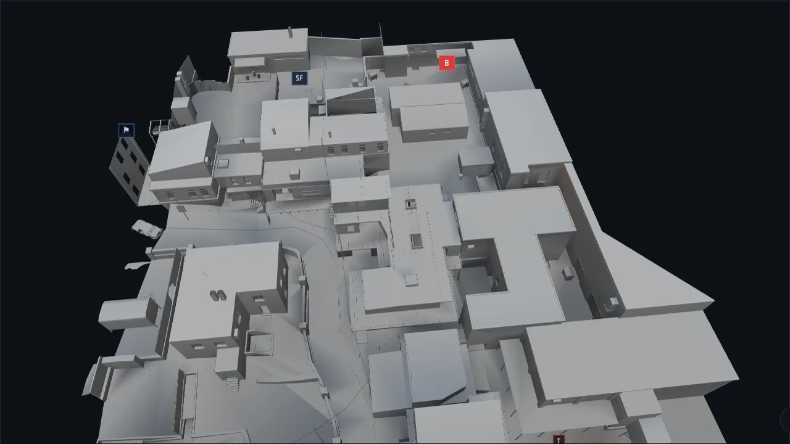

Every map, in 3D, in your browser
The six map pages now carry a 3D model of the real map that you can turn, cut open and study before your first round, and every update gets a page of its own.
Learning a map used to mean losing a few rounds on it. From today, each map page has a 3D model of the full level that you can study before you load in.

Built from the game's own files
The models are not redrawn. They are converted straight from the map files the game loads, so every wall, stair and window sits exactly where it does in a match. The shading comes from the light the original mappers baked into each level, which is why the railyard on Railhouse glows the way it does in game.
Area names, both bomb sites, the flags and both spawn zones float over the model, using the same names the game shows on your HUD. A roof-height slider cuts the buildings open from the top, so you can follow a route through the basement on Railhouse or the tunnel on Snow without guessing.
How to use it
Open any map page and choose Load the 3D view. Drag to turn the camera, right-drag or hold Shift to move it, and scroll to zoom. On a keyboard, the arrow keys turn, Shift and the arrows move, plus and minus zoom, and R puts the camera back. The model is around one to two megabytes, so it only downloads when you ask for it.
The 3D view needs a browser with WebGL 2, which every current version of Chrome, Edge, Firefox and Safari has. If yours does not, the top-down plan on the same page shows the same layout.
A page for every update
Patch notes also have a new home. Every version now gets its own release page with the headline changes up front, a short summary per area and the full list below, with links to the versions before and after it. The News page still lists them all, and each entry links to its page.
Easier to read for everyone
We also ran the whole site through an accessibility audit. It passed the WCAG 2.2 AA checks with no violations, every link and button shows where keyboard focus is, and nothing moves on screen when your system is set to reduce motion. The site now also follows Windows high-contrast mode and the "more contrast" setting on your device.
Was this worth the read?
Anonymous. No account, no cookies.
Questions about this post? Ask the team on Discord.